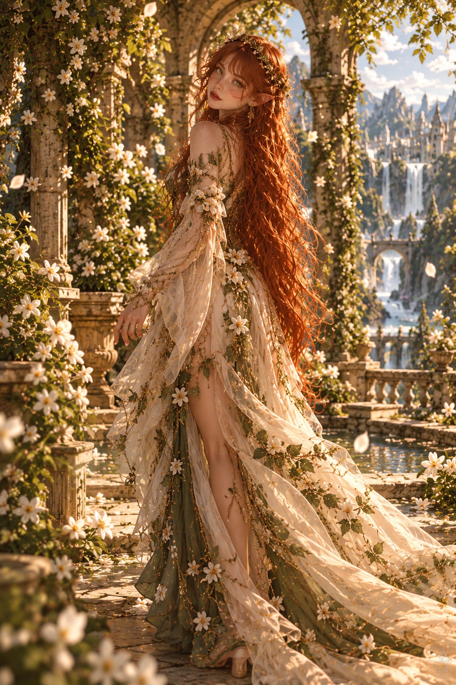
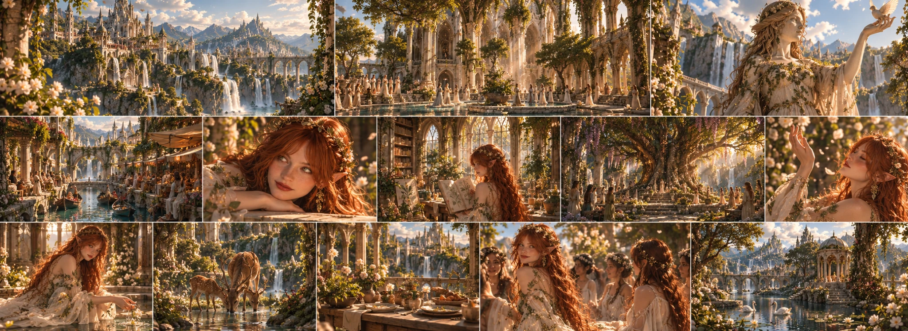

LENA’S TEMPLE A
sacred place living in harmony with nature rather than a silent, enclosed place of worship. People gather here not only to pray, but also to create and share.

Goddess of Life and Creativity
Nature · Life · Art · Creativity · Freedom · Beauty · Growth
For Lena, creating is not merely bringing something into being from nothing.
Explore her teaching ↓Nature · Life · Art · Creativity · Freedom · Beauty · Growth For Lena, creating is not merely bringing something into being from nothing.
A seed becoming a tree, a blank stone being turned into a statue, silence being filled with music, or a person changing over the years into someone else are different forms of the same fundamental power:
Growing. For this reason, nature and art are inseparable in Lena’s domain. Nature constantly creates. Humans reinterpret the world they see. For Lena, both are ways in which life expresses itself. “Life does not have to fit the shape assigned to it.”
Among the seven sisters, Lena is one of those with the strongest curiosity about the world. Seeing something only as it is is often not enough for her. She wonders what else it might become.
This is why Lena’s creativity is not only about art. People’s traditions, the shapes of cities, gardens, clothes, music, and even the ways people build their own lives interest her.
She is one of the sisters most ready to question rules. Yet this should not be confused with Kira’s desire to destroy the order.
Lena’s question is not “Why don’t we destroy this?”, but “Why couldn’t it be different?”
The difference seems small. Yet in Avaris’s history, it can sometimes have very great consequences.
Freedom lies at the heart of Lena’s teaching. Yet she does not see freedom as the absence of all boundaries. A tree needs soil to grow. A river has a bed in which to flow. An artist must know the material they use in order to create. Boundaries sometimes hinder life. Sometimes they give it form. What Lena opposes is not the existence of boundaries, but a being forced to become only what others want it to be.
This is why people’s ability to choose their own lives matters in her teaching. Who they are, what they produce, and how they want to live should not be entirely determined by the expectations of others. Because, for Lena, being created and creating oneself are not the same thing.
Armonia is perhaps the kingdom where Lena’s worldview is most visible. Here, nature is not something left outside cities. It has been brought into them.
Trees, gardens, flowers, waterways, and natural formations become parts of architecture. Structures take shape not by completely removing nature, but around it and together with it.
Yet seeing Armonia only as a “beautiful kingdom full of flowers” would be incomplete. The kingdom’s other fundamental identity is art. Music, painting, sculpture, weaving, dance, storytelling, craft, and different forms of expression are part of everyday life. A square may not simply be a place people pass through. It may also be a space where music is made, works are displayed, or people create together.
Armonia’s beauty comes not from its perfection: But from its constant change.
Lena does not see nature as something fragile that must not be touched. Nature changes, too. Forests grow. Trees die. New plants emerge after fires. Rivers can change their courses. For this reason, Lena’s understanding of nature is not static. Her task is not to freeze the world in a single “perfect” state. It is to protect the space in which life can continue.
This is why she distinguishes between natural death and unnecessary destruction. A falling leaf is not a tragedy. A species being entirely destroyed solely because of greed is another matter. What Lena protects is less each individual life than the possibility of life continuing.
In Armonia, art is not a privilege belonging only to nobles or great masters. According to Lena’s teaching, a work’s value does not come only from its perfection. A rough drawing made by a child and the work of a master who has devoted years to their art do not display the same skill. Yet both are the result of the same impulse: Making something that exists within you visible in the world.
For this reason, art in Armonia has a strong connection to everyday life. Even clothes, buildings, squares, gardens, and objects used every day can carry personal expression. Lena’s influence is sometimes seen more in small details than in great monuments.
For Lena, beauty is not perfection. In fact, she often finds perfection lifeless. A tree’s crooked branch, the stone of an old building worn by time, a mark on a person’s face, the small differences in a handmade work… None of these is the opposite of beauty. In Lena’s teaching, beauty is lived experience becoming visible. For this reason, not everything in Armonia is expected to be identical.
Difference is not seen as disorder. If no two leaves in nature are completely identical, people need not fit the same mold either.
The people of Armonia have a more familiar relationship with Lena than the goddess-people relationship in some other kingdoms. People do not turn to her only during great crises. When beginning new work, when producing a work of art, when planting a garden, when they have children, when choosing a new path in their lives, or when deciding to reveal a side of themselves they have long suppressed, Lena’s name may be spoken.
Rather than a perfect result, people ask her for the courage to keep creating. Because, in Lena’s teaching, even failure is part of creation. Not every seed grows. Not every work is completed. Not every idea succeeds. But trying nothing eliminates every possibility before it is even born.
The importance Lena gives freedom does not mean she advocates unlimited individualism. Where one person’s freedom destroys another’s life or freedom, Lena does not see it as creation.
Because true freedom is not merely “I can do whatever I want.” It also requires the thought: “I must leave a world in which others can be themselves, too.”
This is why Lena’s understanding of nature and her understanding of freedom are connected. If only one species lived in a forest, that forest might look more orderly. But it would not be more alive.
Lena is one of the more lively, curious characters among the seven sisters, experiencing her emotions visibly. She may question the firm boundaries her sisters impose on the world. There may be times when she finds Dara’s discipline too rigid, Nora’s caution too slow, and Talia’s prolonged weighing of everything exhausting. Yet Lena also needs something they possess:
A boundary. Because the desire to create can sometimes turn into acting without considering the consequences. Lena’s greatest strength is being able to see possibilities. Her greatest weakness is sometimes thinking every possibility is worth trying. For this reason, Yuna’s understanding of balance is especially important to Lena. Yuna can remind her that not every change is progress. Lena, in turn, reminds Yuna that sometimes one must not fear change for the sake of preserving balance.
Lena is warm, curious, and lively. She approaches people more easily than some of her other sisters. She enjoys seeing new things, talking to different people, and examining what people create. She is more interested in originality than status. A craftsperson making something she has never seen in a small workshop may catch her attention more than a ruler’s perfect palace.
Yet Lena’s warmth does not mean she is always easy to deal with. She can be quite stubborn toward authority that needlessly restricts her or others.
She does not accept something being done merely because “It has always been done this way” as sufficient justification for doing it.
To persuade her, one must explain not that the tradition exists, but why it is still necessary.
“Life does not have to fit the shape assigned to it.”
Lena

sacred place living in harmony with nature rather than a silent, enclosed place of worship. People gather here not only to pray, but also to create and share.
Armonia’s structures do not exclude nature. Gardens, trees, water, and plants are parts of the city’s fabric.
In Armonia, art is not merely a privilege of the elite. From music to weaving, from sculpture to everyday objects, creation is seen in every layer of life.
Depictions of Lena are not rigid or ruler-like. Statues associating her with nature, movement, or the moment of creation are preferred.
Squares are living public spaces used not only for commerce, but for music, performances, works of art, and shared creation.
In Armonia’s gardens, importance is placed on keeping plants’ own character visible rather than forcing nature into perfect symmetry.
Color, music, and personal expression are not reserved for special occasions in Armonia. The strongest trace of Lena’s teaching is seen in ordinary people’s everyday lives.